달린 길이이야기가 되는 곳
혼자 달린 길도, 같이 달린 길도 지도 위에 한 줄로 남아요. 그 줄에 사진과 들른 곳이 붙고, 다른 라이더의 다음 주말이 돼요.
Android는 먼저 테스터 그룹에 가입(누구나 가능)한 뒤 [Play에서 받기]를 눌러 주세요. 그룹에 가입한 구글 계정과 폰의 Play 계정이 같아야 해요.
무료 · 한국어 · 日本語 · English
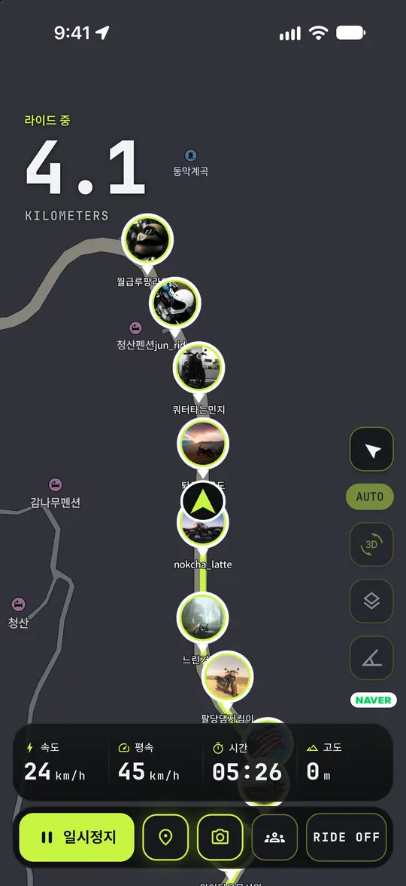
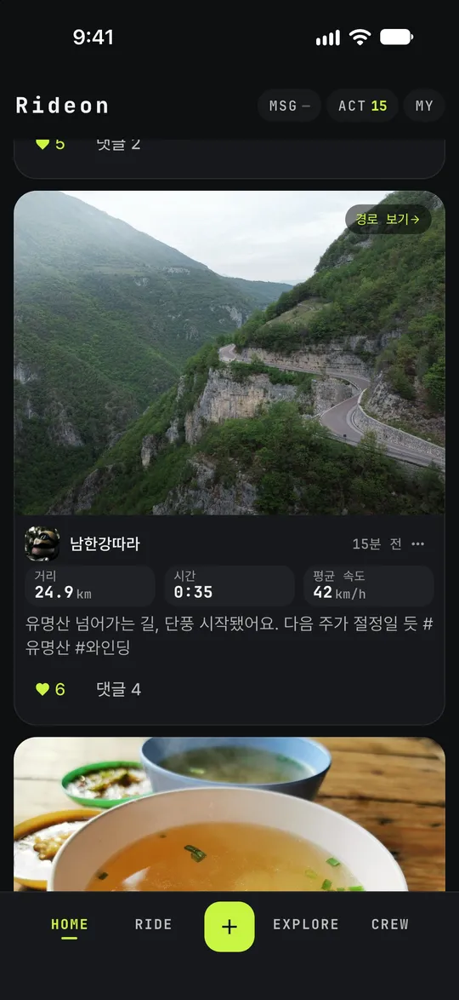
토요일 아침, 유명산
한 번의 라이딩이
남기는 것
단톡방에 「7시 옥천 출발」을 올리던 날을, 앱 하나로 그대로 옮겼어요.
모인다
집결지에 누가 도착했는지, 준비됐는지 명단에서 바로 보여요.
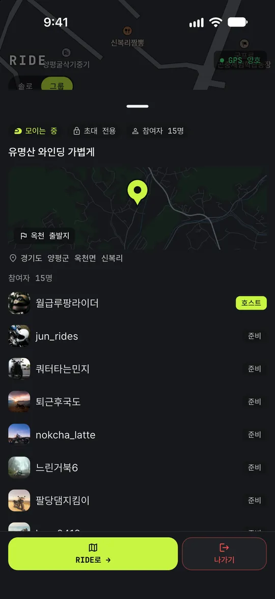
같이 달린다
뒤처진 사람이 지도에 보이고, 신호는 이모지 하나로 보내요.
도착한다
호스트가 끝내면 모두의 기록이 같이 저장되고, 달린 만큼 경험치가 쌓여요.
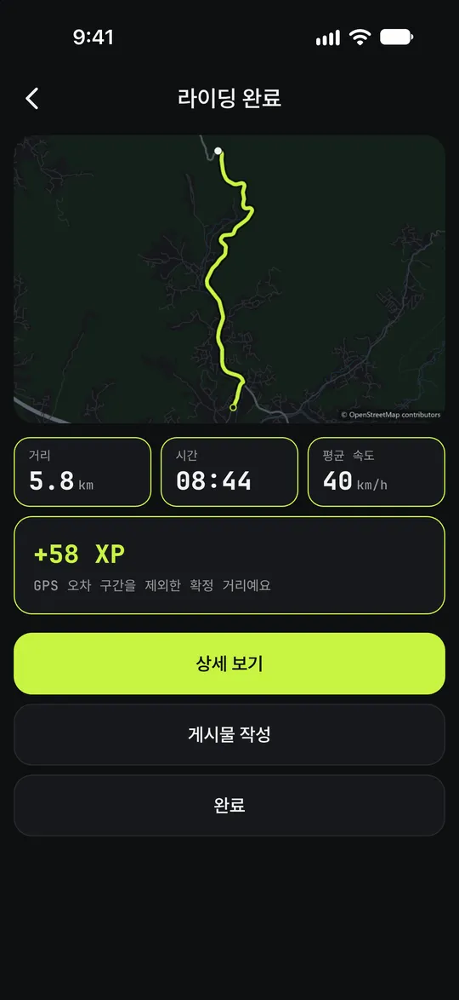
남긴다
달린 길에 사진을 붙여 올리면, 그 길이 누군가의 다음 코스가 돼요.
크루
단톡방 말고,
크루에서
늘 같이 타는 사람들이 모이는 곳이에요. 대화하다 「토요일 7시 팔당」을 잡으면 일정이 되고, 몇 명 오는지 바로 보여요.
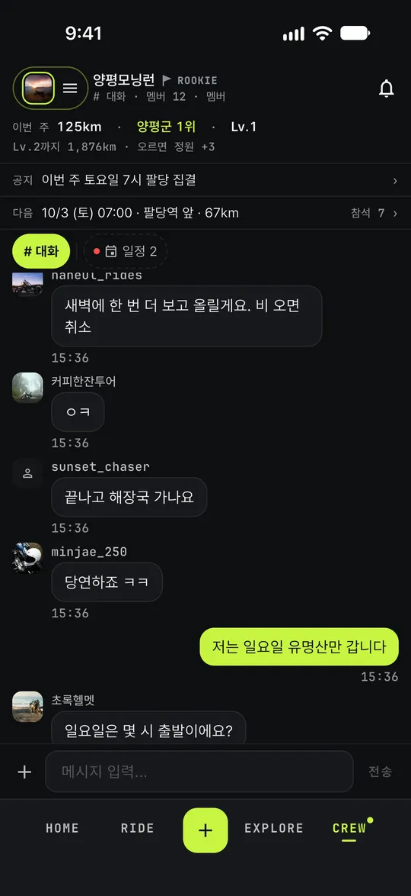
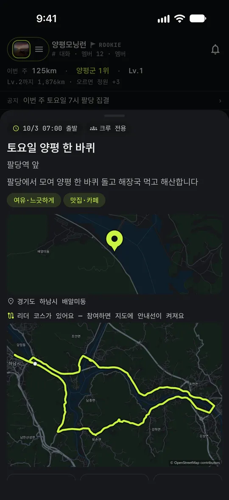
코스
이번 주말 달릴 길이
여기 있어요
라이더들이 실제로 달린 길만 모여요. 마음에 드는 길은 담아 두었다가, 그날 그대로 따라 달리면 돼요. 길안내는 이륜차가 못 가는 자동차전용도로를 피해요.
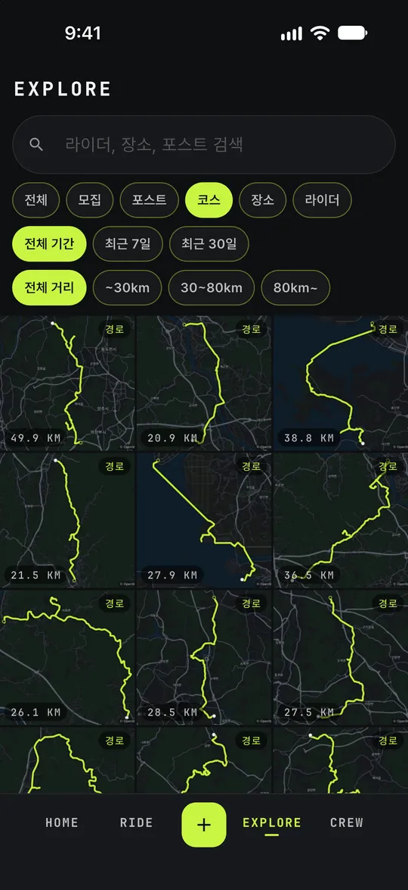
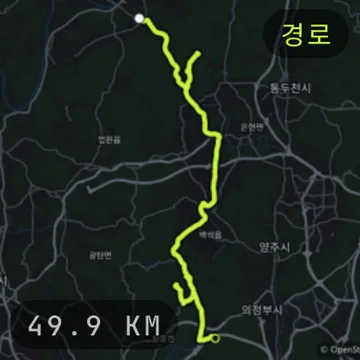
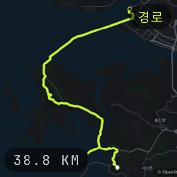
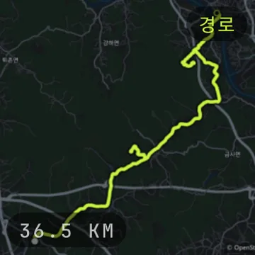
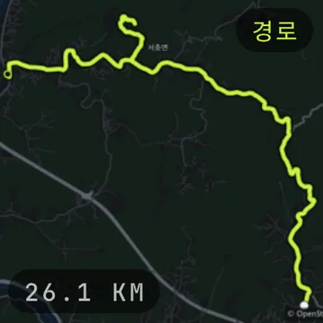
레벨
달린 만큼,
메달이 바뀌어요
달린 거리만큼 레벨이 오르고, 메달마다 Lv.500을 넘기면 다음 메달로 올라가요. 프로필 사진 테두리가 동에서 다이아로 바뀌어요. 피드에서도, 같이 달리는 지도 위에서도 누구에게나 보여요.
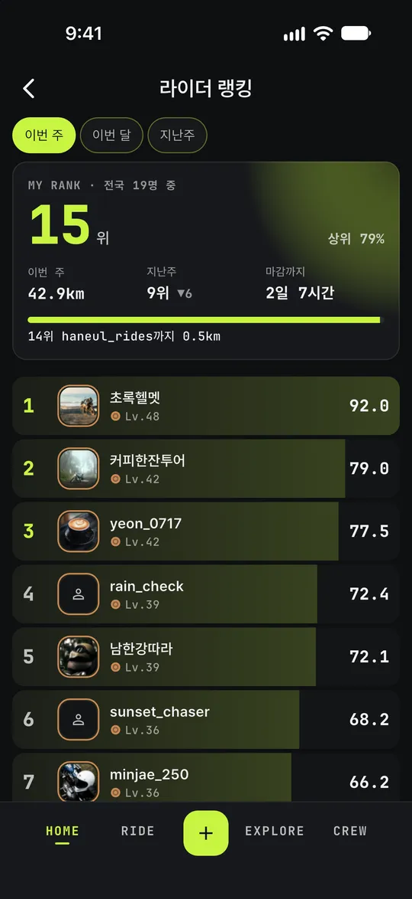
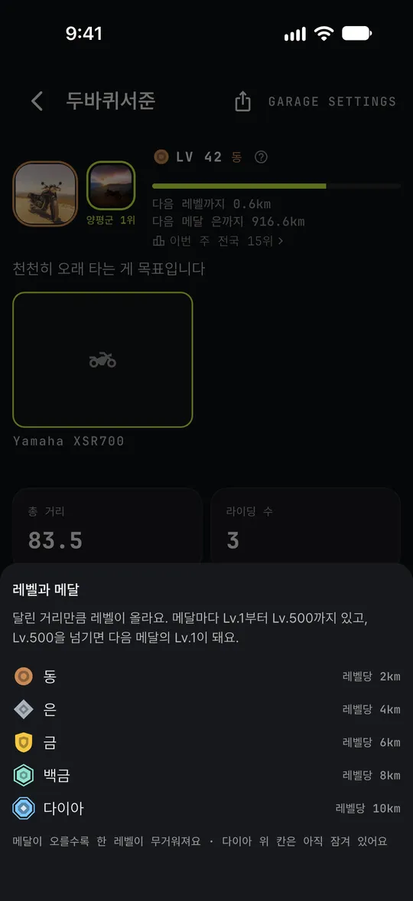
위치를 다루니까
라이더의 집을 지켜요
실시간 위치는 같은 방 안에서만
같이 달리는 사람에게만, 달리는 동안만 보여요. 방이 끝나면 위치 공유도 끝나요.
출발·도착 200m는 가려요
라이딩은 보통 집에서 시작하니까요. 남에게 보이는 기록은 양 끝이 자동으로 가려져요.
언제든 지울 수 있어요
앱 설정에서 바로 계정을 지워요. 무엇을 얼마나 보관하는지는 개인정보처리방침에 있어요.
묻는 것
자주 받는 질문
네. 기록과 그룹 라이딩 같은 기본 기능은 앞으로도 무료로 둬요.
돼요. 섞여서 같이 달릴 수 있어요.
돼요. 주행 중엔 이모지로 신호를 주고받고, 위치는 지도로 봐요. 길안내 음성은 연결된 헤드셋으로 나와요.
15명까지요. 크루 라이딩은 크루 정원만큼 함께해요.
기록은 폰에 먼저 쌓였다가 연결이 돌아오면 올라가요.
기록은 돼요. 지도와 길안내는 지금은 한국 안에서만 보여요.
문의하기
불편한 점, 바라는 점
무엇이든 보내 주세요
만드는 사람이 직접 읽고, 사람의 말로 답해요. 고친 것은 업데이트 소식으로 다시 알려 드려요.
앱 안에서 보내도 돼요
앱에서 보내면 쓰는 폰과 앱 버전이 자동으로 붙어서, 더 빨리 확인할 수 있어요.
ME → 설정 → 문의하기이번 주말 달린 길도
이야기가 될 거예요
Android는 먼저 테스터 그룹에 가입(누구나 가능)한 뒤 [Play에서 받기]를 눌러 주세요. 그룹에 가입한 구글 계정과 폰의 Play 계정이 같아야 해요.